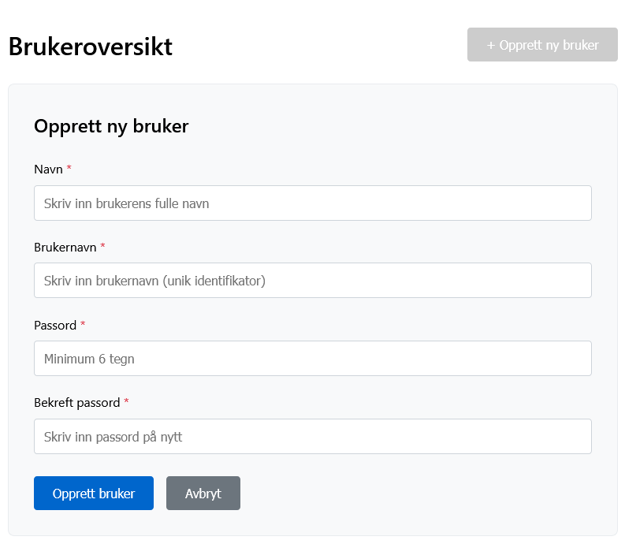
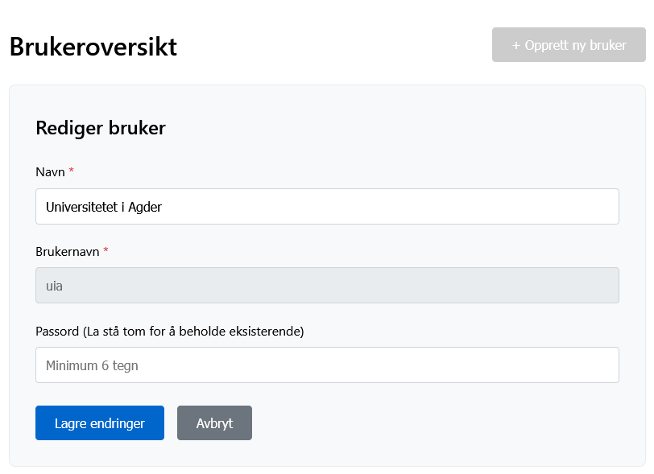
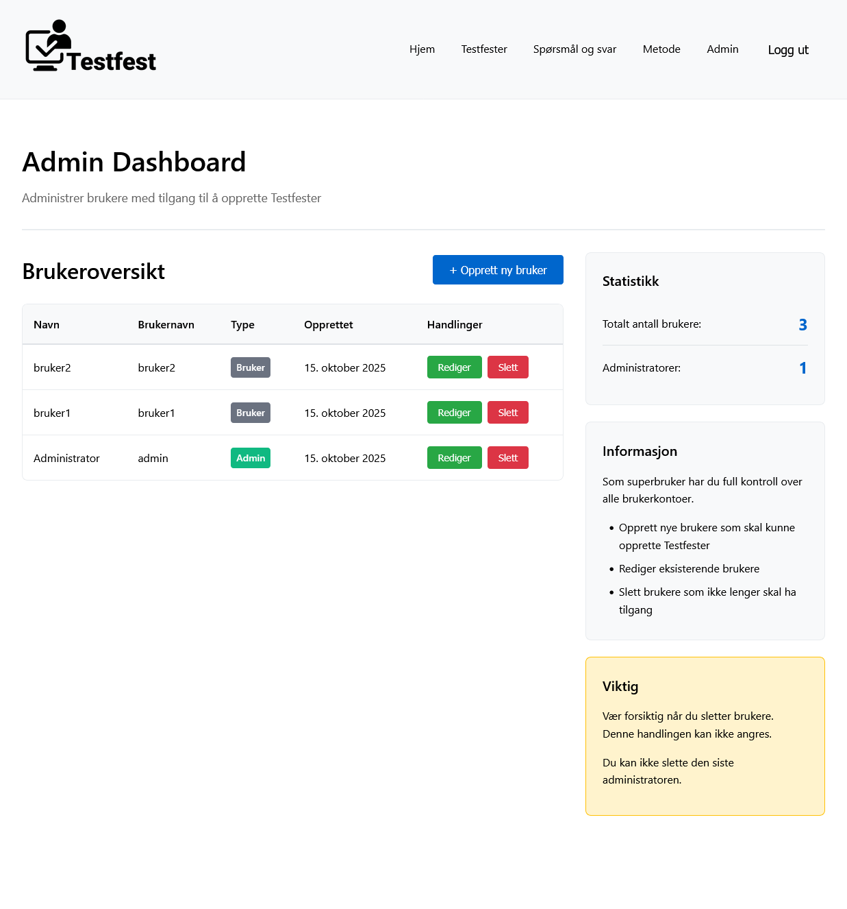
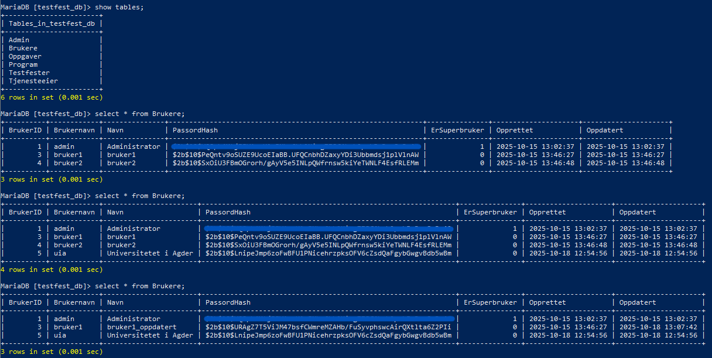

Vi fortsetter med å bygge en ny versjon av Testfest med moderne frontend og et eget brukersystem.
Til nå er det gjort betydelige fremskritt med å koble databasen til systemet og implementert autorisering for innlogging.
Siden forrige status har vi blant annet:
Tingtun er en liten bedrift med få ansatte, noe som gjør at det er kort vei mellom idé og beslutning. Dette gir oss mulighet til rask progresjon, men krever også at vi tar selvstendig ansvar i utviklingsarbeidet. Prosjektet involverer samarbeid mellom flere organisasjoner, noe som innebærer at vi må forholde oss til ulike krav og standarder, særlig universell utforming og nasjonale retningslinjer for tilgjengelighet. Løsningene må derfor være både teknisk robuste, brukervennlige og inkluderende. Tilgangen til Tingtuns server har også krevd at vi setter oss grundig inn i eksisterende infrastruktur for å kunne jobbe sikkert og effektivt.
Tingtun preges av fleksibilitet, samarbeid og innovasjon. Den åpne og eksperimentelle tilnærmingen gir oss frihet til å ta egne beslutninger, men fordrer samtidig til at vi er strukturerte og tar initiativ. God kommunikasjon og selvstendig problemløsning blir derfor essensielt. Vi har mottatt enkelte rammer for hvordan vi kan implementere funksjonalitet og utseende, med krav om både universell utforming og teknisk kvalitet.
Vårt ansvar har omfattet flere tekniske oppgaver: installasjon av MariaDB på serveren, oppsett av database, utvikling av innloggingsfunksjonalitet samt brukerhåndtering. Dette har gitt verdifull erfaring med databasestruktur, terminal, serveradministrasjon og autentisering. Den største utfordringen har vært å konfigurere servertilgangen korrekt og sikre smidig kommunikasjon mellom database og applikasjon. Utviklingen av påloggingsløsningen krevde teknisk forståelse og godt teamarbeid for å ivareta krav til sikkerhet og brukervennlighet.
Målet med praksisprosjektet er å levere en komplett nettside og database som Tingtun kan ta i bruk for Testfest, med funksjonalitet tilpasset både produkteiere og testere.
Vi vil fortsette utviklingen av både frontend og backend, gjennomføre grundig testing av løsningen, og vurdere muligheten for å integrere videre funksjonalitet som kan være ønskelig for Tingtun.
For å se bildene i full størrelse, høyreklikk og velg "Åpne bilde i ny fane".

Admin – opprett bruker

Admin – rediger bruker

Admin‑dashbord

MariaDB – databasestruktur